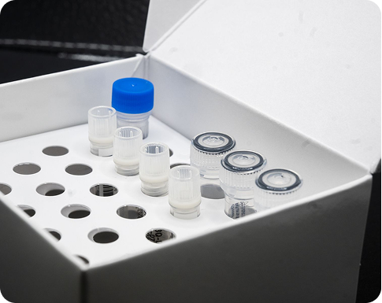

Wet format
Liquid kits, ready to pipette
The familiar liquid workflow, for labs with freezer capacity that want full flexibility in reaction setup.
- Master mix, primers and probes, and positive control in one kit
- Stored at −20 °C
- Full flexibility in reaction setup and volumes
- Reorders ship within 72 hours